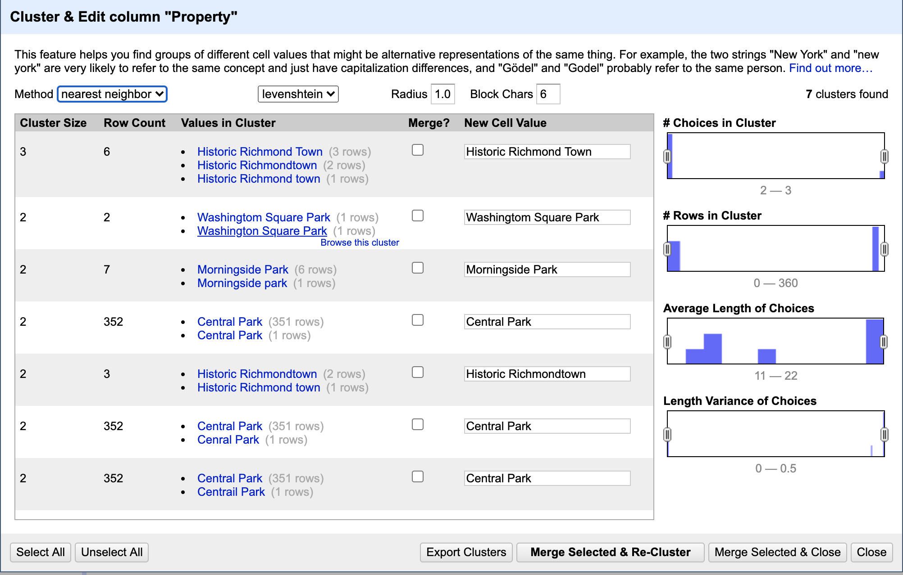
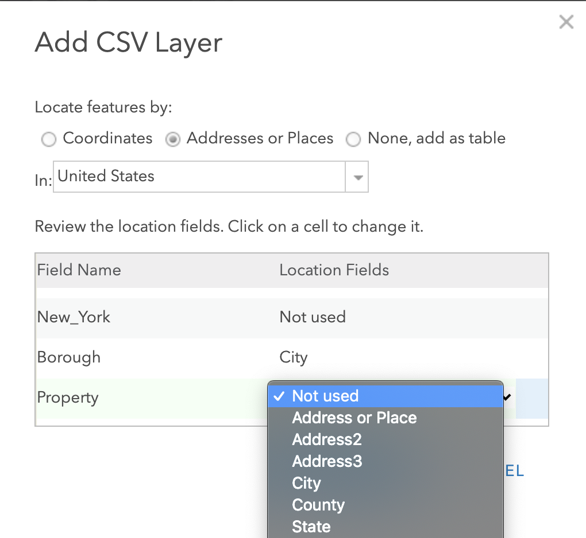
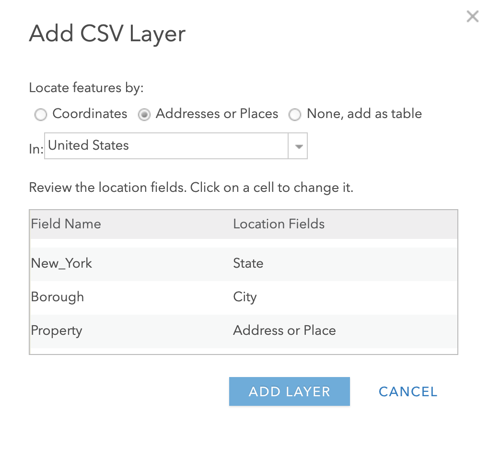
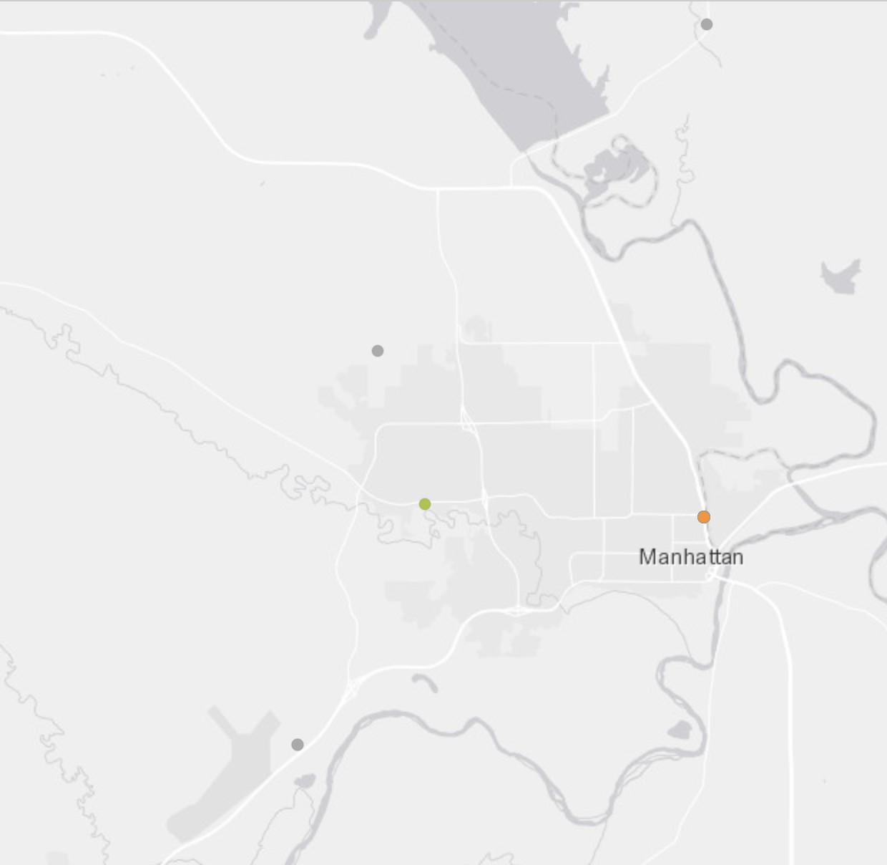
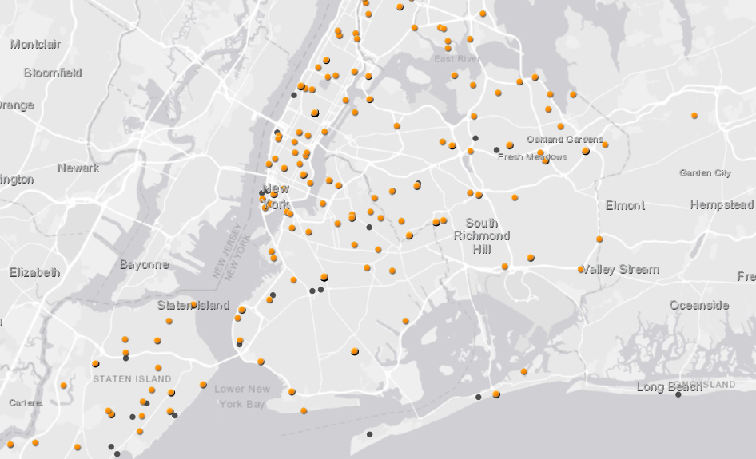

Property in the database. Using this field, I decided to try out geocoding the information in ArcGIS Online.#Note, this first csv has been cleaned as part of the first post, so see that part to check what has been changed already from the original dataset.
data_raw <- read.csv("UrbanRangerDataClean.csv")
#Calls by property
head(data_raw$Property, n=10)## [1] Washingtom Square Park Van Cortlandt Park
## [3] Irving Square Park Parade Ground
## [5] Silver Lake Park Washington Square Park
## [7] Tompkins Square Park Tompkins Square Park
## [9] Flushing Meadows Corona Park Flushing Meadows Corona Park
## 194 Levels: 5 East 102nd St 851 Fairmont Pl Abingdon Square ... Wolfe's Pond Parkdata_raw.csv file uploaded if you want to follow along.species.description and animal.class to refine these columns. Last step, add a column for State and put New York for all entries- reason will be clear below. Export this csv file.



